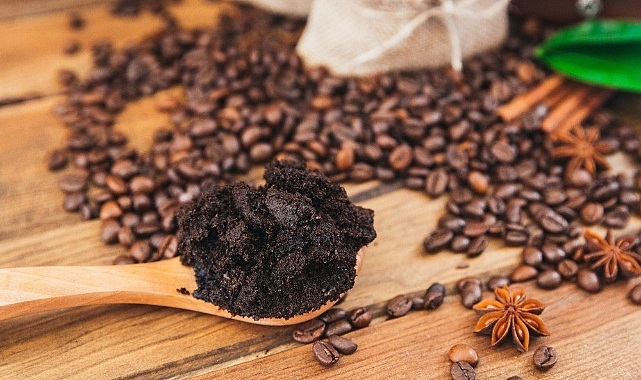

Değerli Bileşik Saflaştırma

Süperkritik Akışkan Ekstraksiyon (SFE) teknolojisi, özellikle organik atıkların ileri dönüşümü için büyük potansiyel sunar. Tarım, gıda, kozmetik, eczacılık ve biyoyakıt endüstrilerinde kullanılmayan veya düşük ekonomik değer taşıyan yan ürünleri işleyerek yüksek katma değerli bileşikler üretmek mümkündür.
Zeytinyağı üretimi sırasında ortaya çıkan posa, fenolik bileşikler açısından oldukça zengindir. Süperkritik CO₂ kullanılarak bu posadan oleuropein, hidroksitirosol ve diğer antioksidanlar çıkarılabilir.
Portakal, limon ve greyfurt kabukları, uçucu yağlar (limonen gibi) açısından değerlidir. SFE, bu kabuklardan uçucu yağların yanı sıra pektin gibi lifli materyalleri de elde etmeyi mümkün kılar.
Kahve üretiminde ortaya çıkan atıklar, kafein ve antioksidanlar açısından zengindir. Süperkritik CO₂ ekstraksiyonu ile kahve posasından kafein ve lipidler çıkarılabilir.